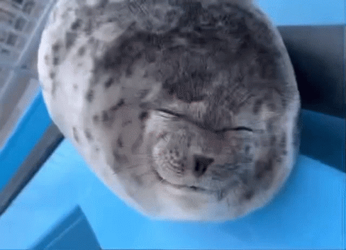
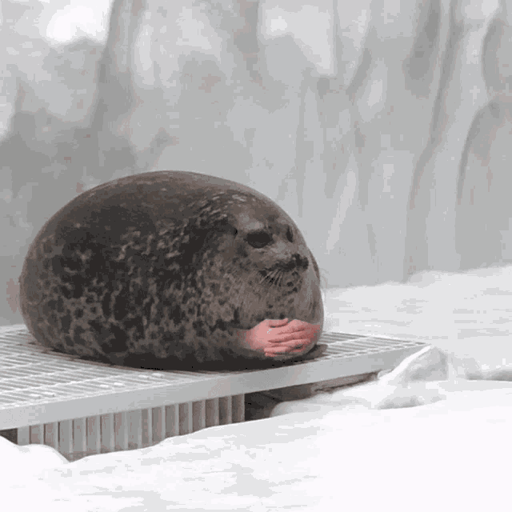
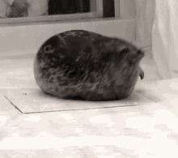

⠀(ˆ𐃷ˆ)

⠀ฅ^>⩊<^ ฅ

ADRIANA SALTEEE🗣️

ʸᵒ ᵉˢᵖᵉʳᵃⁿᵈᵒ ᵖᵃʳᵃ ᵛᵒˡᵛᵉʳ ᵃ ʰᵃᵇˡᵃʳ ᶜᵒⁿᵗᶦᵍᵒ ᵃᵖᵉⁿᵃˢ ᵗᵉʳᵐᶦⁿᵃᵐᵒˢ ˡᵃ ˡˡᵃᵐᵃᵈᵃ

⠀(:3 っ)っ

⠀/ᐠ > ˕ <マ ₊˚⊹♡

ʸᵒ ᶜᵃᵈᵃ ᑫᵘᵉ ʰᵃᵇˡᵃᵐᵒˢ ( ˶ˆᗜˆ˵ )

ᵖᵒᵗᵃˣᶦᵉ ᵈᵉ ᶜᵒʳᵃᶻᵒ́ⁿ 💅👄💅

⠀⠀(~˘▾˘)~

⠀⠀⸜(｡˃ ᵕ ˂ )⸝♡